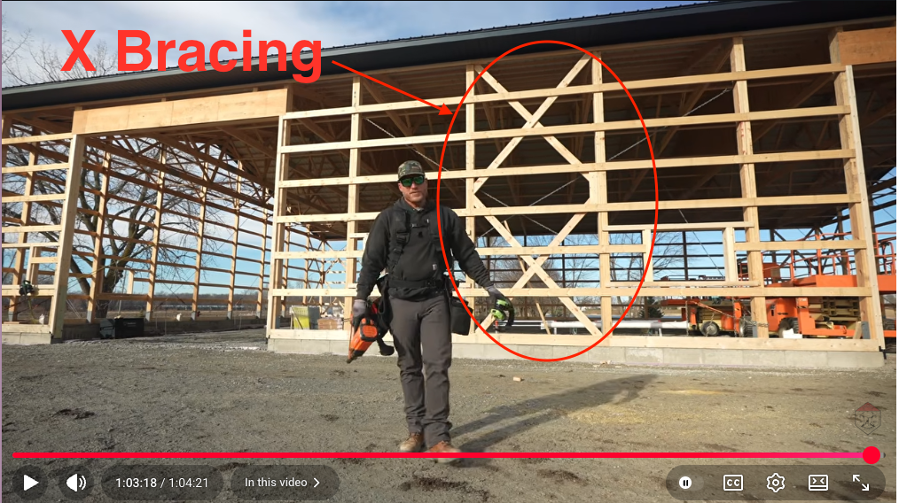

Why (and possibly what) is an X-Brace calculator.
I am a avid follower of RRBuilding on YouTube. Most of Kyle and Greg's videos are about building modern post and beam buildings ("pole barns").
When constructing larger building, bracing in the form of "x"s are placed in the frame. Adding the "X braces" requires the angle and length of the lumber to be calculated. The video below shows how Kyle goes about calculating and installing his "X" braces. 
Here is a diagram of what the geometry looks like:

In the video, Kyle approximates the angle t using a triangle with sides w and h/n (the actual angle t has sides w and h1). The approximate angle t allows Kyle to calculate the value of h2. The value h1 is calculates from h/n minus the approximated h2. A final value for t and the length of the brace, l is then calculated.
My curiosity got the best of me and I wanted to see if it was possible to derive the dimensions for the x brace (t and l) without using the approximation. I believe I have an answer which is documented here.
I implemented the calculation in javascript and html.
In the example in the video I linked above, the height of the bay (h) is 222", the width of the bay (w) is 7' 2 1/4", the lumber is 2x6 so the width of the brace (d) is 5 1/2", and 2 braces (n) are being constructed. Using Kyle's method, he calculates a brace length (l) as 133 5/8" and angle (t) of 49.80° or pitch of 14 3/16". Using my x brace calculator, I get a brace length (l) of 133 15/16" and an angle (t) of 49.91° or pitch of 14 1/4".
As Kyle says "the math doesn't lie".